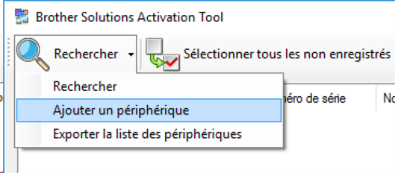
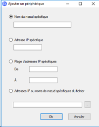
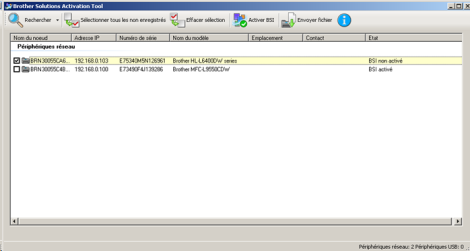
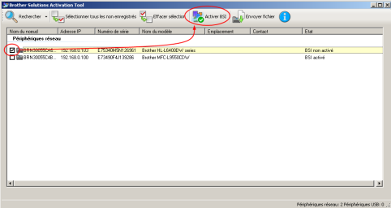
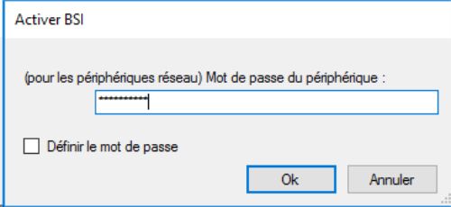

WES Brother - Prérequis et configuration préalable
Configurer les périphériques
La configuration du WES Brother doit être précédée d'une configuration sur le périphérique depuis l'interface web d'administration de ce dernier.
Définir le mot de passe des périphériques
Par défaut, le site web de paramétrage des périphériques Brother n’est pas protégé par un mot de passe. Afin de déployer le WES en toute sécurité, il est obligatoire d’en configurer un :
-
depuis un navigateur, accédez à l'interface de configuration du périphérique d'impression ;
-
authentifiez-vous avec le compte d'accès qui vous a été communiqué ;
-
cliquez sur l'onglet Administrateur ;
-
saisissez un nouveau mot de passe dans le champ dédié ;
-
puis confirmez le nouveau mot de passe dans le champ dédié ;
-
cliquez sur Envoyer ;
-
déconnectez-vous puis reconnectez-vous avec le nouveau mot de passe pour le tester.
Activer Brother Solution Interface (B.S.I)
La configuration du périphérique s'effectue à partir de l'interface Brother Solution Interface qu'il convient d'activer à l'aide de Brother Solutions Activation Tool (BSAT). Cet outil supporte tous les modèles compatibles avec le SDK BSI.
Au lancement de l’outil, une recherche sur le réseau est automatiquement effectuée. Si le poste depuis lequel est lancée la recherche se trouve sur le même réseau/VLAN que d'autres périphériques, ces derniers sont tous listés au terme de la recherche.
Si vous souhaitez ajouter un périphérique non-listé :
-
dans le menu Rechercher, cliquez sur Ajouter un périphérique :

-
dans la boîte Ajouter un périphérique, remplissez l'un des critères de recherche suivants :
-
un nom du noeud (NETBIOS ou DNS) ;
-
une adresse IP ;
-
une plage d’adresses IP.
-
-
cliquez sur le bouton OK pour lancer la recherche :

-
Au terme de la recherche, les modèles détectés apparaissent dans la liste avec les informations suivantes : Nom, adresse IP, numéro de série, modèle et leur état. Cet état peut avoir plusieurs valeurs :
-
BSI activé : : la machine est prête à recevoir une interface embarquée ;
-
BSI non activé : la machine est compatible, mais il est nécessaire d’activer BSI avant de le déployer ;
-
BSI pas pris en charge : la machine n’est pas compatible pour recevoir une interface embarquée ;
-
Terminé : l’activation vient d’être réalisée avec l’outil.

-
-
dans la liste, sélectionnez le ou les périphériques pour lesquels activer BSI ;
-
cliquez sur le bouton Activer BSI ;

-
Dans la boîte Contrat de licence Watchdoc, lisez et acceptez les conditions pour continuer l'installation ;
-
dans la boîte CPJL, parcourez le dossier d'installation Watchdoc pour y sélectionner le fichier comportant la clé d'activation produit (extension .cpjl) ;
-
dans la zone ID solution, saisissez la valeur : 548CCFE057090007 ;
-
cliquez sur OK pour valider la sélection de la clé d'activation.
-
dans la boîte Activer BSI, saisissez le mot de passe du périphérique dans la zone de saisie ;
-
cliquez sur le bouton OK

èL'outil active alors BSI sur les périphériques sélectionnés et les redémarre.